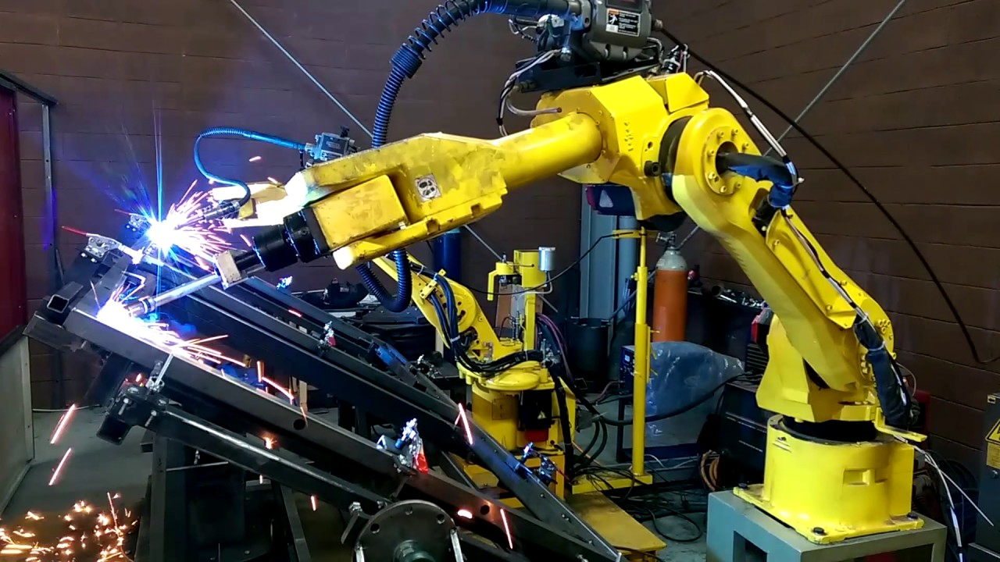

Ventajas de la inteligencia artificial y la robótica
Si nos centramos en el sector empresarial, estas son las principales ventajas del uso de esta tecnología:
Automatización de procesos
La inteligencia artificial permite la automatización de procesos, de forma que los robots pueden llevar a cabo tareas repetitivas que optimicen los procesos sin necesidad de que exista una intervención humana.

Menos intervención humana
La liberación de intervención humana de los procesos repetitivos potencia una mayor creatividad en los trabajadores.
Resultados más precisos
Las máquinas son mucho más precisas que los seres humanos.
Los errores humanos se reducen al máximo
Las máquinas son capaces de detectar ciertos fallos que no se pueden ver a simple ojo.
Mayor control en los procesos
La inteligencia artificial es capaz de controlar y ser mucho más eficiente en los procesos productivos y las líneas de producción.
Robots para trabajos peligrosos: claves para la reducción de riesgos
Las empresas manufactureras han encontrado en los robots para trabajos peligrosos un aliado fiable para diseñar plantas de producción adecuadas para la prevención de riesgos. El hito de los “cero accidentes laborales” no parece tan lejano si es un brazo robótico el que se encarga de coger, levantar, dejar, soldar, atornillar, pulir y otros tantos verbos que nos trasladan al trabajo físico, desgastante y, a veces, peligroso.
La prevención de riesgos laborales se halla en la cima de las preocupaciones de una empresa. En primer lugar, para garantizar la seguridad e integridad de los trabajadores y un entorno de trabajo saludable y agradable. Pero también hay una razón económica y operativa: cada accidente laboral supone una media de 11 días de baja.
